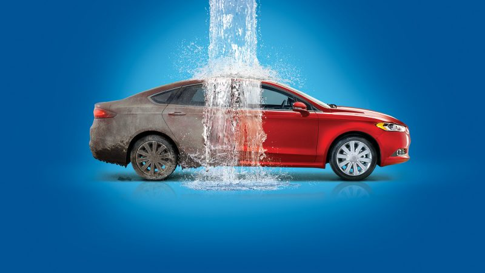
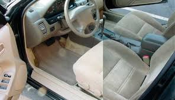
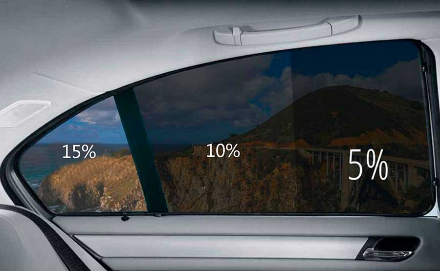
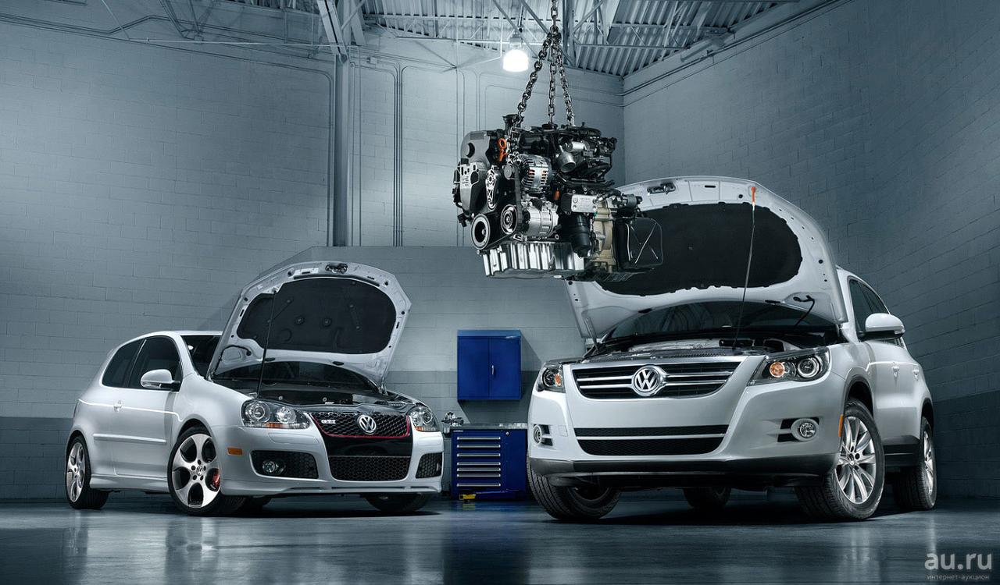
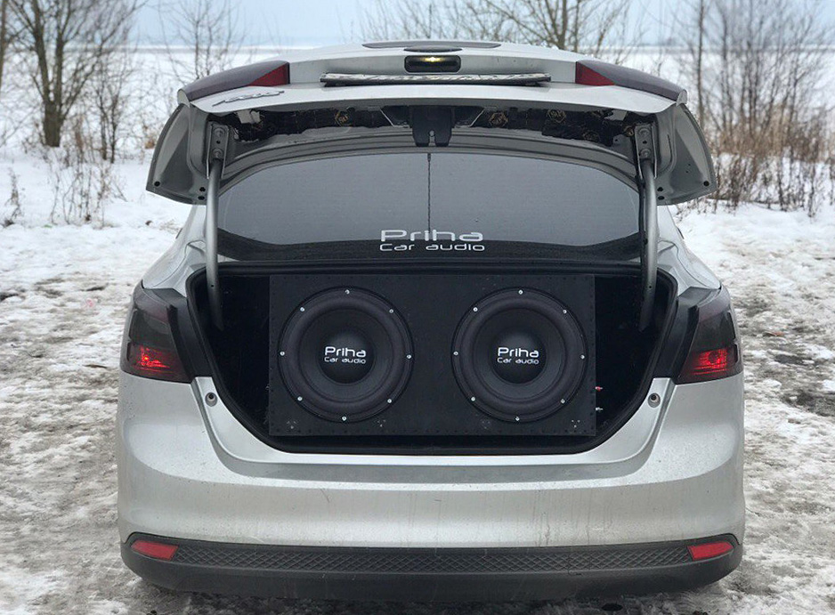
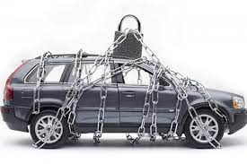

Автосервис Oksik79
С момента основания компания росла и успешно развивалась. Первой услугой была установка автосигнализации и защита от угона автомобиля, которая производилась в первом сервис-центре по адресу Уткина пр., 98. Постепенное расширение спектра услуг и открытие новых сервис-центров, предоставляющих множество услуг, кроме установки автосигнализации, позволяет нашим клиентам продолжать пользоваться услугами компании без необходимости ездить через весь город. Несмотря на то, что для многих клиентов сервис-центры Oksik79 - это прежде всего место регулярного обслуживания на мойке, установка сигнализации до сих пор остается важнейшим направлением работы компании. Компания развивает и другие технически сложные направления работы, участвуя в программе Bosch Auto Service. Мы гордимся нашей репутацией надежного партнера и уверенного лидера на петербургском рынке автоохранных технологий и комплексного обслуживания автомобилей. Автосигнализации в Петербурге принято устанавливать в сервис-центрах Oksik79.
Профессиональный подход к работе, качественное обслуживание, доступные цены и гибкая система скидок позволяют нам строить долгосрочные отношения с клиентами. Ими являются как частные лица, так и различные предприятия нашего города. Автомобилистам Санкт-Петербурга мы всегда готовы предложить актуальные спецпредложения и интересные дисконтные программы, а корпоративных клиентов ждут выгодные условия сотрудничества.
Нам приятно осознавать, что мы оправдываем доверие тех людей, которые стали нашими постоянными клиентами и пользуются услугами компании Oksik79 уже много лет. Они выбрали для себя автосервис в Петербурге - это Oksik79.
Мойка автомобиля
-
Высокое качество мойки автомобиля
Соблюдение технологий, последовательности обработки и применение эффективной автохимии европейского качества позволяют добиваться стабильно высокого качества мойки автомобиля. Использование аппаратов высокого давления дает возможность тщательно обрабатывать такие труднодоступные места как резиновый уплотнитель, точки примыкания молдингов, фар, зеркал, а также колеса и диски автомобиля.
-
Безопасная технология мойки
Технология автомойки - позволяет избежать появления механических повреждений лакокрасочного покрытия — царапин, затертостей, эффекта «паутинки». На сегодня данным требованиям удовлетворяет только бесконтактная мойка высоким давлением. Для минимизации контакта с лакокрасочным покрытием во время сушки автомобиля мы рекомендуем применять жидкий воск или полимер.
-
Скорость мойки
Использование мощных аппаратов высокого давления позволяет существенно ускорить процессы нанесения моющих средств и облива кузова. Благодаря внедрению современных разработок, с каждым годом сокращается время действия активной пены за счет повышения ее эффективности, то есть сокращается срок ее непосредственного контакта с кузовом автомобиля. Также финальная обработка жидким воском или полимером сократит время сушки.
Химчистка автомобиля
Время говорит за себя. Качество наших работ подтверждено 15-ти летним опытом. Многолетний опыт работы в области полировки кузова и химчистки салона автомобиля позволяет нам гарантировать 100-% ный результат. Мы постоянно совершенствуем технологию с учетом тенденций мирового автопрома в использовании лаков, красок (включая керамические лаки) и материалов для отделки салона. Нами разработаны специальные приемы для работы на самых сложных и капризных поверхностях.
Все защитные покрытия и материалы, использующиеся для химчистки автомобиля, экологически чистые, гипоаллергены и соответствуют стандартам VOC (международный cтандарт, регламентирующий допустимый уровень летучих органических соединений). Благодаря сотрудничеству с компанией 3М нам доступен столетний опыт компании в области абразивных материалов, полировальных систем и инструментов для полировки автомобилей
Мастера специализируются только на предоставлении услуг по химчистке и полировке, а не предоставляют эти услуги в составе прочих. Это позволяет предоставлять более широкий ассортимент из приведенного перечня услуг, сфокусировать все силы на Вашем автомобиле.
Цена за обслуживание Вашего автомобиля формируется в зависимости от габаритов автомобиля, степени сложности работ и состояния Вашего автомобиля.Стоит отметить, что Вы платите за труд высокой квалификации и профессиональные материалы.
НаверхТонировка автомобиля
Возможности дополнительного стайлинга автомобиля практически безграничны. Одним из самых быстрых, простых и доступных решений является тонировка стекол автомобиля или установка на стекла тонировочной пленки. Именно тонировка сможет придать лоск и неповторимый стиль вашему автомобилю. Автомобиль с затонированными стеклами выглядит солиднее, заметнее и красивее.
Разнообразие оттенков тонировочных пленок позволяет подобрать оптимальное решение в зависимости от стиля автомобиля. Помимо оттенка следует обратить внимание и на степень затемненности пленки или светопропускание. Процент светопропускания в наименовании пленки обозначают цифрами. Чем меньше число, тем пленка темнее. Возможно комбинированное тонирование стекол автомобиля, когда передняя часть авто тонируется более светлыми пленками, а задняя часть — более темными пленками той же серии. Самые светлые пленки обычно используются для тонирования лобового стекла.
НаверхПолный ремонт автомобиля
Закончился период гарантийного обслуживания автомобиля или Вы просто не хотите переплачивать за ремонт у дилера? Тогда Вам к нам!
- Ремонт ходовой части, ремонт подвески
- Ремонт коробки передач (ремонт КПП)
- Профилактика тормозов
Автомагнитолы
Жизнь в мегаполисе заставляет нас проводить в дороге за рулем много времени каждый день. Для многих из нас автомобиль стал и рабочим пространством. Создать приятную, комфортную и функциональную обстановку в дороге сможет мультимедийное или просто музыкальное сопровождение в автомобиле (автомузыка, автозвук, car audio). Возможности музыкального тюнинга автомобиля практически не ограничены.
Современный мир диктует новые правила и определяет стандарты. Для тех, кто ценит лучшее, оптимальным решением сегодня являются многофункциональные мультимедийные устройства, включающие все новейшие опции для автомобилиста.Мультимедийные устройства сегодня предлагаются как универсальные, так и специально созданные под конкретный автомобиль, то есть полностью повторяющие дизайн штатного головного устройства, но функционально на порядок насыщеннее.
НаверхЗащита от угона
Три вида защиты:
-
Автосигнализации
-
Иммобилайзеры
-
Механические устройства